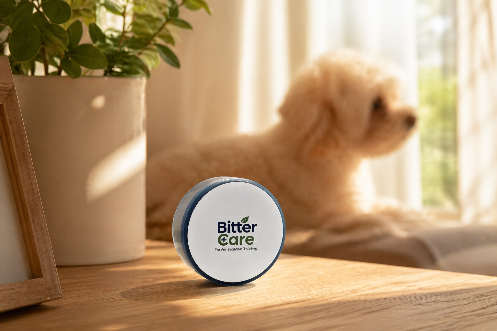

FAQ
よくある質問
上手な貼り方から反応が違う理由まで、疑問を一つずつ確認しましょう。

反応と使い方
初めて使う前にも、使用中にも。
どのペットも同じ反応をしますか？
気質や感覚の敏感さによって違いがあります。苦味への反応や慣れる速さも異なるため、初めは飼い主さまが見守ってください。
どのくらい使えますか？
温度・湿度・摩擦の頻度・接着状態によって異なります。反応が弱まったり、傷みや浮きが見られたりしたら取り外して交換してください。
どこに貼れますか？
平らで乾いた滑らかな家具やドア枠など、口が触れる場所に使用してください。凹凸・濡れた表面・布・ラグは接着しにくい場合があります。コードカバーなど別の素材は使用可否と接着状態を先に確認してください。
ペットの安全について注意することは？
BitterCareは接触する場所に苦味を加える行動ケア補助ステッカーです。ステッカーを噛んだり飲み込んだりさせないでください。噛んで剥がす行動が続く場合は取り外し、異常な反応があれば使用を中止してください。原料や詳しい案内は「使用前の確認」でご覧いただけます。
剥がしたときに跡は残りますか？
表面の素材や仕上げによって異なります。高級木材や特殊な仕上げなどデリケートな素材は、目立たない小さな部分で試してから使用してください。
直接なめさせてもよいですか？
直接なめさせないでください。繰り返し噛む生活面に貼り、自然に触れる使い方です。
コードにも使えますか？
損傷を確認し電源を抜いてから、短く巻いて密着させてください。絶縁・感電防止製品ではありません。傷んだコードには使わず、犬が届かないよう整理してください。
ステッカー自体を噛んだら？
端の浮きや範囲を確認を。はがそうとする行動が続く場合は取り除き、噛んでもよい物を用意してください。
無料分析に購入は必要ですか？
購入前でも無料分析を利用できます。製品は別途購入で、結果は参考情報です。
使い方を先に見ると、
もっと簡単に。
貼る場所と方法を確認すると、使用がぐっと簡単になります。
HERE FOR YOU
問い合わせる ↗困ったときも、一緒に考えます。
貼る場所から製品についてのご質問まで。内容を確認後、メールでお返事します。